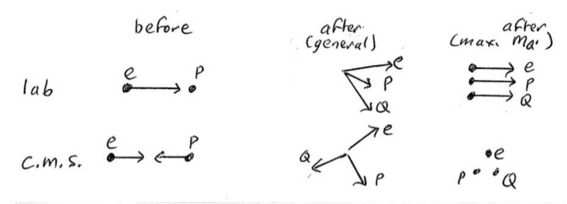
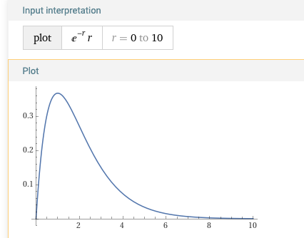

8. Homeworks and formative assessments#
Roughly every two weeks, you will be given an exercise, which should be attempted by the following week.
The purpose of the homeworks is to help your revision of the lecture material and to give you practice in problem solving.
Two of the exercises are assessed homeworks, which must be handed in the following week. These will be marked (the total homework mark counting 15% towards this module), and will be returned to you, with comments, before the next homework is set. The other exercises are no less important to your understanding of the course, and should also be attempted seriously. Solutions will be provided two weeks after each non-assessed exercise is set.
In this unit we introduce the elementary particles of the Standard Model, we introduce the units used to measure quantities in particle physics, and we recap the rules of relativistic kinematics.
8.1. Homework 1. Due on 21 October#
This homework will assess Unit 1 and is made of two questions on relativistic kinematics.
8.1.1. Question 1. Two body decay (4 marks)#
Consider the decay \(\pi^+ \rightarrow \mu^+ \nu_\mu\) in the pion rest frame. Evaluate the energy of the muon in the pion rest frame.
[Mass of the pion (\(\pi^+\)) is 139.6 MeV/\(^2\), mass of the muon (\(\mu^+\)) is 105.7 MeV/c\(^2\), and the neutrino (\(\nu_\mu\)) is masseless ]
Solutions and feedback
The homework is marked out of 10, which will be rescaled to count as 7.5% of your total mark.
A general positive comment is about the clarity and the presentation of the homework! You all did very well on that front.
Solution:
Write energy conservation
Use
Gives:
We can isolate the square root and have
And square
And eventually
Feedback:
Many of you solved the equations to calculate the momentum of the pion and then derived the energy from there. This is correct, and was awarded full marks. However since the momentum was not required, it is faster to solve for E directly
If you do calculate the momentum \(p\), then the easier way to get to the energy is to use the energy conservation equation written at the beginning. So
Of course you can also use the kinematic formula below, but it’s just more difficult
A few people got confused with the square root. Remember that the fact that
Does NOT mean that E=p+m (!!)
As a consequence the kinetic energy of a particle with mass is NOT equal to \(p\) (!!)
8.1.2. Question 2. Production of a a new particle (6 marks)#
Electrons of energy 4.00 GeV are incident upon stationary target protons and a search is made for neutral particles \(Q^0\) produced in the reaction
What is the maximum mass of \(Q^0\) which can be produced? Use any reasonable approximations, but justify your arguments. Make clear which statements you make are generally valid, and which are specific to the case of maximum \(Q^0\) mass.
Hint Consider how the three particles will appear in the centre-of-mass frame in the special case of \(Q^0\) being at its maximum mass. And remember that \(E^2 – p^2\) (whether for an individual particle or a system of particles) is a Lorentz invariant, so it has the same value in all frames of reference. Use this to relate the initial state in the laboratory frame to the final state in the centre of mass frame.
[Mass of electron is 0.511 MeV/c\(^2\); that of proton is 938.3 MeV/c\(^2\).]
Solutions and feedback
**Solution: **
A drawing of the physics process in the lab and centre-of-mass frames is:
{kind=link}

Fig. 8.1 Schematics of the \(e^- + p \rightarrow e^- + p + Q^0\) process.#
For the maximum \(Q^{0}\) mass, we must have minimum kinetic energy consistent with the conservation of momentum. In the centre-of-mass frame zero kinetic energy is possible, i.e. the three particles are all at rest in this frame. This means that the Lorentz invariant
This is calculated in the rest frame, however being an invariant, it will have the same value in any other reference frame, including the Lab frame
NOTE: The fact that the invariant is equal to the sum of the three masses squared is true only because we assume that the three particles are at rest in the centre-of-mass frame (!!) This is not true in general, e.g. if the particles are moving
Evaluating the Lorentz invariant in the Lab frame before the collision and equating it to the same quantity calculated after the collision
And so
Which gives \(m_{Q}=1.958 \mathrm{GeV} / \mathrm{c}^{2}\) The mass of the electron could be neglected in the equation above as it is much smaller than all the other masses
Feedback:
You did not need to expand the expression \(\left(m_{p}+m_{e}+m_{Q}\right)^{2}\). It’s perfectly OK to do it, but in the end you get a value for \(m_{p}+m_{e}+m_{Q}\) to which you can subtract the known masses of the proton and the electron
The mass of the electron can be neglected, as it is smaller than all the other quantities. It makes the algebra a bit simpler, but perhaps not that much simpler to have to explain that.
Some of you confused the fact that the Lorentz invariant quantity is independent of the reference frame, and instead assumed that the total energy is invariant. The expression for the total energy \(E^{*}=m_{q}+m_{e}+m_{Q}\) is only valid in the centre of mass frame. In the lab frame the energy will have a different value \(E=E_{e}+m_{p}\)
It is NOT correct to assume that \(E^{*}=E\), in fact they are different
The quantity that is independent of the reference frame is \(E^{2}-p^{2}\) and that is calculated in the centre of mass frame as \(\left(m_{p}+m_{e}+m_{Q}\right)^{2}\).
If you do that, you’d get that the maximum mass of the Q particle is 4 GeV . This means that all the energy of the electron goes to the mass of \(Q\). However it is not possible to do that, as it would violate momentum conservation
8.2. Exercise A. Fermions & Bosons (not assessed)#
8.2.1. Question A1. Proton form factor#
In the lectures, we showed that the form factor \(F(q)\) is the 3-D Fourier transform of the normalised charge distribution \(\rho(\boldsymbol{r})\)
For a simplified model of a proton’s charge distribution, \(\rho(r)=C \frac{e^{-r / R}}{r}\)
Find the constant of proportionality \(C\) required to normalise \(\rho\) correctly.
Show that \(F(q)=\frac{1}{1+\frac{q^{2} R^{2}}{\hbar^{2}}}\).
Give an interpretation of the constant \(R\)
Solution
Part 1: normalisation
The normalisation factor \(C\) should be such that the integral over all space of the charge distribution should be equal to 1.
The integral should be done in spherical coordinates replacing
Since there is no dependency on the polar coordinates \(\theta\) and \(\phi\) the integral on the polar variables gives us a \(4\pi\) factor hence
Integrating by parts we have
Part 2: Form factor We repeat the integration similarly to what was done in Example 2.3. We integrated in polar coordinates in \(\phi\), \(\cos \theta\) and finally on \(r\). The details are
The exponential terms \(e^{-r/R}\) will give us 0 for \(r\rightarrow \infty\) and \(1\) for \(r=0\), so we can simplify as
And finally replacing the value obtained for \(C\) in part 1 we get
We should note that for \(q=0\) we get \(F(q)=1\) as expected.
Part 3: Interpretation If we plot the function for \(r e^{-r/R}\) we can examine the functional dependence of \(\rho(r)\). The charge distribution will have a maximum at \(r=R\) as in the figure below, and will extend to larger values of \(R\). Hence \(R\) would correspond to the radius where the nuclear density is at a maximum.
We can exclude this distribution as, experimentally, we expect the cross section and \(F(q^2)\) to have dips as a function of \(q\) (see example 2.5), while for this particular charge distribution the form factor is a continuos function.
{kind=link}

Fig. 8.2 \(r e^{-r/R}\) distribution, plotted to study the behaviour of the function \(\rho(r)\). The x-axis would represent the value of \(r/R\), and we can see a maximum for \(r=R\).#
8.2.2. Question A2. Yukawa Potential#
Earlier in the course, we used the Born approximation to show that in the case of scattering with a momentum transfer \(q\) from a spherically symmetric potential \(V(r)\), the matrix element is given by
For the case of the Yukawa potential,
( with \(R=\hbar / m c\), and \(m\) the mass of the exchanged boson mediating the force) show that the matrix element evaluates to
When an electron scatters electromagnetically off a nucleus, the exchanged boson is the massless photon, and at low energies the nucleus can be considered to remain effectively at rest. Show that in case the scattering cross section yields to the Rutherford scattering formula with the usual angular dependence of
Solution
Part 1: Calculations
To calculate the integral
we reuse the derivation from Section 2.4.1 where we introduced a factor \(\lambda\) and then set \(\lambda=0\). The integral is the same provided we replace:
and we no longer assume that \(\lambda=0\). If we take the result obtained before setting \(\lambda=0\) the result of the integral becomes
Using the definition of \(\lambda\) and \(R\) we get
Yielding the final result
Part 2: Coulomb approximations
If the propagator is a photon the formula for \(f(q^2)\) reduces to the formula we derived earlier and in particular since \(m=0\) we have
In Section 2.4.2 we evaluated \(q=2p \sin \theta/2\) and the cross section is proportional to the square of \(f(q^2)\), e.g.
so in the case of a scattering off a point-like nucleus which is mediated by a photon we recover the formula for the Rutherford scattering as expected.
8.3. Homework 2. Due on 25 November#
8.3.1. Question 1: \(\rho\) meson decays in flight#
The neutral rho meson often decays into two charged pions, \(\rho^{0} \rightarrow \pi^{+} \pi^{-}\). In a monoenergetic beam of these mesons, some decays are observed where one pion is at rest. What is the energy of the particles in the beam?
8.3.2. Question 2: Allowed and forbidden decays#
Which of the following reactions are allowed by lepton number conservation, and which are forbidden? Explain.
\(\tau^{+} \rightarrow \mu^{+} v_{\mu} \bar{v}_{\tau}\)
\(\pi^{+} \rightarrow \mu^{+} \gamma\)
\(\pi^{+} \rightarrow \mu^{+} v_{\mu}\)
\(\pi^{0} \rightarrow e^{+} e^{-} \gamma\)
\(\tau^{+} \rightarrow e^{+} \gamma\)
\(\tau^{-} \rightarrow \pi^{-} v_{\tau}\)
8.3.3. Question 3: Photon-proton capture#
A high energy photon can excite the quarks in a proton, producing a short-lived state which rapidly forms a nucleon and pion. Calculate the minimum photon energy required for the following reaction to occur when the target is a stationary proton
Hint: consider the final state in the centre of mass frame.
8.3.4. Question 4: Yukawa potential#
In Exercise A, we saw that the Yukawa potential leads to an expression for the matrix element of
In the scattering of high energy neutrinos off electrons, it is observed that (after correcting for changing phase space or density-of-states effects) the differential cross-section falls by \(10 \%\) as the momentum transfer \(q\) increases from small values to \(20 \mathrm{GeV} / c\). Use this information to estimate the mass of the exchanged boson.